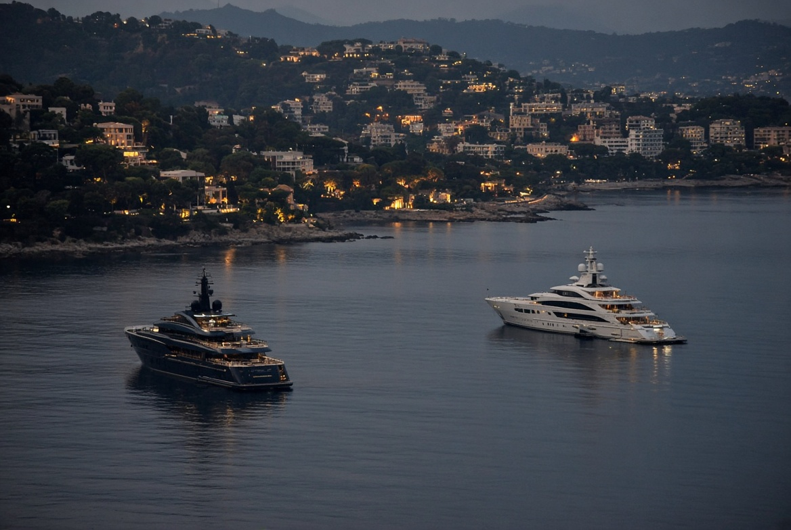

Gli eredi della guerra
Mentre i padri si contendono Dorothy, i figli si incontrano a Londra, a Cap Ferrat e a Los Angeles. Una settimana di tavoli, yacht e silenzi.
Mentre i padri si scambiano offerte in sterline, i figli si scambiano sguardi. È a Londra, a Cap Ferrat e a Los Angeles che la guerra per Dorothy & Co. ha cominciato ad assomigliare a una questione di famiglia, e a mostrare i suoi veri protagonisti: le persone che, tra vent’anni, dovranno tenersi ciò che i padri stanno comprando.

Julien, l’uomo di Londra
Classe 1983, vicepresidente di Groupe Balleroy, Julien è il figlio che Roland ha deciso di mettere davanti. Nelle ultime settimane lo si vede a pranzo in un ristorante di Mayfair, sempre allo stesso tavolo in fondo, con il telefono capovolto accanto al piatto. Chi ha provato ad avvicinarlo parla di un uomo cortese che non dice mai di no e non dice mai di sì. A Parigi, dicono, ha lasciato un appartamento pieno di scatoloni mai aperti e una segretaria che risponde a tutti allo stesso modo: «Monsieur Julien è a Londra».
Il padre ha una linea su Dorothy: dà a Londra un volto diverso da quello di Fenwick & Orr. Il figlio, per ora, ne ha un’altra: dorme poco. «Roland gli ha detto che questa è la sua partita», racconta un amico di famiglia. «Non ha precisato se per vincerla o per perderla.»
Camille, l’assente
Poi c’è la sorella. Camille Balleroy è fotografa, vive tra Parigi e Los Angeles, non ha mai avuto un ruolo nel gruppo e, a quanto pare, non ne ha mai voluto uno. Negli ultimi anni le sue mostre sono state più affollate dei consigli di famiglia. A La Falaise, la villa di Cap Ferrat, la sua stanza è la meglio esposta e la meno usata. Il suo nome non compare in nessun comunicato e in nessun organigramma, e per una famiglia che ha sempre trattato le assenze come decisioni, è già una notizia.
Cinque figli, cinque maison, un solo posto
Dall’altra parte del tavolo non c’è un erede, ce ne sono cinque. Armand Verclaire, che non ha mai assistito a una sfilata, ha affidato a ciascuno dei suoi figli una maison del gruppo e ha lasciato che la gara si facesse da sola: i risultati di ognuno li leggono tutti, dirigenti e analisti compresi. Nessuno ha mai saputo chi sia in testa, e il presidente non ha mai indicato un successore. Dorothy potrebbe cambiare la classifica.
- Aurélien
- Chastelain
- Constance
- Verlhac
- Baptiste
- Montessier
- Héloïse
- Kenzeau
- Gaspard
- Givelan
Aurélien, il maggiore, guida la casa da cui è nato tutto, Chastelain, ed è quello che parla meno. Constance dirige Verlhac, la pelletteria: la più vicina a ciò che fa Dorothy, e per questo il primo nome di ogni pronostico. Baptiste è il più mondano dei cinque e il più sorvegliato dagli altri quattro. Héloïse ha preso Kenzeau e l’ha portata, dicono, dove nessuno si aspettava. Gaspard, il più giovane, ha Givelan e un cognome che pesa più della sua maison. A tavola, assicurano, nessuno parla di lavoro. È il motivo per cui tutti sanno esattamente come stanno andando gli altri.
«Roland guarda Dorothy e vede Londra. Armand la guarda e vede la lista dei figli.»Una persona vicina a una delle due famiglie, a TRUE
Sabato sera a Saint-Jean
Nel fine settimana in cui due yacht ormeggiavano a poche centinaia di metri l’uno dall’altro nella baia, un locale di Saint-Jean ha avuto un tavolo molto commentato. Julien Balleroy e Héloïse Verclaire sarebbero stati visti tra amici comuni, non seduti vicini ma nemmeno lontani. Nessuno dei due conferma di esserci stato. Nessuno dei due, a quanto si dice, ha pagato il conto.
I padri trattano per un marchio. I figli, senza dirselo, per quello che resterà a loro.
- 1983 Nasce Julien Balleroy, vicepresidente del gruppo.
- 5 I figli di Armand Verclaire, ognuno alla guida di una maison.
- 2026 Dorothy & Co. riunisce i due rami in una sola partita.